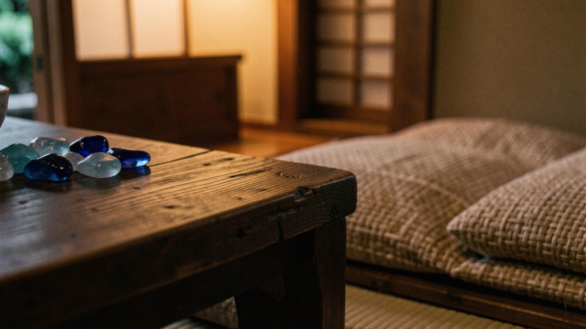

01
三十五年、島で続く味
女将が子どもの頃から親しんできた料理を、日々の仕入れに合わせておまかせで用意します。

Miyakojima / Reservation only
女将がその日にお出しするのは、宮古島の家庭料理を七、八品。自家製ジーマミー豆腐の厚揚げに、島の海と畑の恵み。三十五年つづく、小さな予約制の食事処です。
About Kura
繁華街から少し離れた久貝の静かな場所で、蔵は宮古島の家庭料理を守り続けています。派手な演出よりも、島の野菜、地魚、宮古味噌、受け継いだ味。会話と料理を急がず楽しむための、小さな食事処です。
女将が子どもの頃から親しんできた料理を、日々の仕入れに合わせておまかせで用意します。
一組ずつ落ち着いて迎えるため、訪れる前にお電話での確認をお願いしています。
グルクン、イラブチャー、島野菜、ジーマミー豆腐。土地の食材を、家庭の味で。
Omakase evening
その日の食材に合わせて、七、八品ほどの宮古島料理をお出しします。決まったメニュー表ではなく、予約時のお話と季節から、その夜だけの流れを整えます。
人数、時間、食べたいもの、苦手なものがあれば前日までにお伝えください。
地魚、島野菜、豆腐、宮古味噌。女将がその日に合うものを組み合わせます。
小鉢、魚、揚げ物、煮物、ご飯もの。会話に合わせてゆっくり進む夜です。
旅の終わりに思い出すのは、強い味ではなく、島の家に招かれた感覚。
Miyako dishes
見た目の華やかさより、食べ進めても疲れない深い味わい。宮古島の家庭料理を知るための料理が、少しずつ並びます。
外はさっくり、中はとろり。蔵を思い出す味として語られることの多い一品です。
沖縄の県魚として知られるグルクンを、香ばしく。島の夜に合う素直な一皿です。
日によって登場する魚料理も楽しみのひとつ。塩と出汁で、魚の味をまっすぐに。
ゴーヤ、島らっきょう、冬瓜、パパイヤ。土地の野菜を家庭の味付けで。
女将の話を聞きながら、島の食文化に触れる時間。料理だけでなく、空気ごと味わいます。
Reservation guide
蔵は、前日までのお電話をお願いしている小さなお店です。営業時間や休みは変わる場合がありますので、ご来店前に直接ご確認ください。